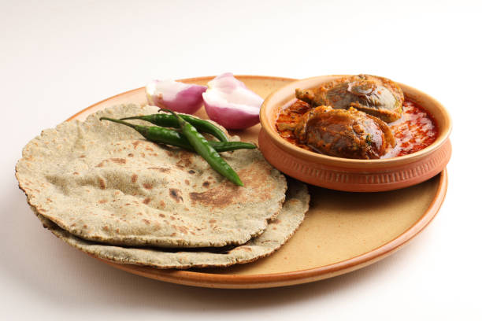
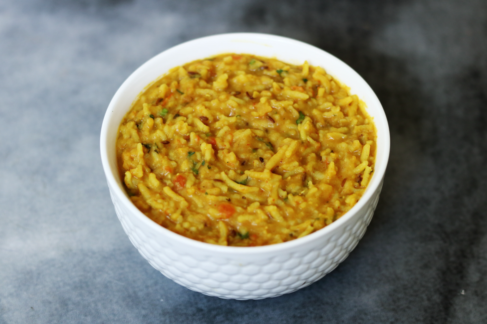

Vada Pav is a popular street food from Maharashtra, especially Mumbai. It consists of a spicy potato fritter (vada) placed inside a soft bun (pav), often served with chutneys and fried green chili. Simple, tasty, and affordable, it’s known as the “Indian burger.” Loved by all age groups, Vada Pav is not just food—it's a part of Mumbai’s culture, offering a burst of flavor in every bite and a quick meal on the go.
Poha a light and healthy breakfast dish made from flattened rice, popular across Maharashtra and many parts of India. It is cooked with onions, mustard seeds, turmeric, green chilies, and sometimes peas or potatoes, then garnished with fresh coriander and lemon juice. Often topped with sev or grated coconut, Poha offers a perfect balance of taste and nutrition. It's quick to make, easy to digest, and loved for its soft texture and mild flavors. Poha is not just a dish—it's a comforting start to the day in many Indian homes.
Puran Poli a traditional Maharashtrian sweet flatbread made during festivals like Gudi Padwa and Holi. It is prepared by stuffing soft, thin wheat dough with a sweet mixture called “puran,” made from boiled chana dal (Bengal gram), jaggery, and flavored with cardamom and nutmeg. The poli is then rolled out and roasted with ghee until golden. It is served hot with ghee, milk, or katachi amti (spicy dal curry). Rich in taste and culture, puran poli is a festive treat that brings joy, tradition, and sweetness to every Maharashtrian home.

Bhakri also known as Bhakar, is a traditional flatbread commonly eaten in rural and urban Maharashtra. Made from flours like jowar (sorghum), bajra (pearl millet), or rice, it is thick, rustic, and usually cooked on a hot griddle without oil. Bhakri is best enjoyed hot with thecha (spicy chili chutney), pithla, or bharli vangi (stuffed brinjal). It is filling, healthy, and especially popular among farming communities for its energy-boosting qualities. Simple yet hearty, Bhakri reflects the earthy flavors and lifestyle of Maharashtrian households and holds a special place in everyday meals.

Dal Khichdi a comforting and nutritious Indian dish made by cooking rice and lentils (dal) together with mild spices. Soft in texture and easy to digest, it is often flavored with cumin, turmeric, ghee, and sometimes vegetables. In Maharashtra, it's commonly served with papad, pickle, or a dollop of homemade ghee. Dal Khichdi is not just food—it's comfort in a bowl, often eaten when one is unwell, tired, or simply craving something warm and wholesome. Loved across generations, it’s a simple yet soulful part of everyday Indian meals.